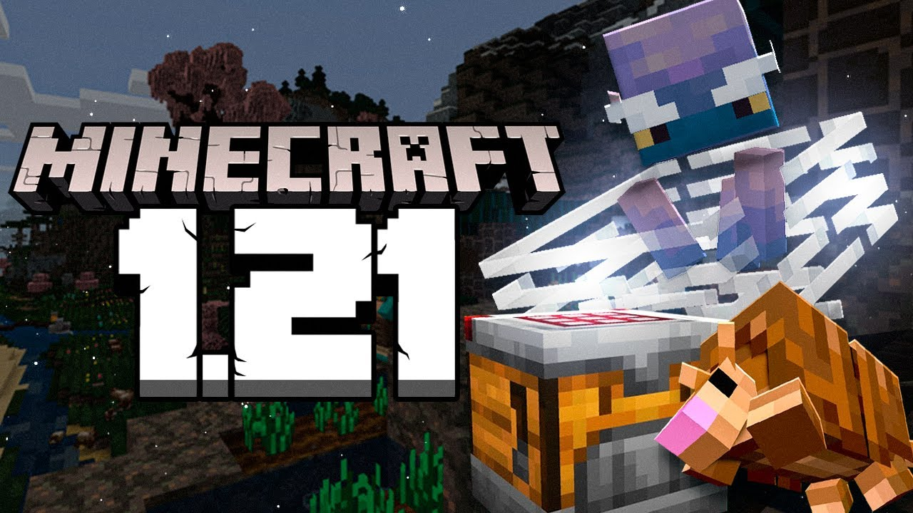

Minecraft 1.21.52.02 👇
Sobre o Minecraft 1.21 📚
A atualização 1.21 do Minecraft: Pocket Edition (MCPE) trouxe uma série de novos recursos e melhorias ao jogo. Entre os destaques estão:
1. Novos mobs: Introdução de novos mobs no jogo, como o Sniffer, que pode ser encontrado em biomas especiais e tem um papel importante na descoberta de sementes antigas.
2. Novos blocos e itens: Novos blocos como Moss Blocks e Fungus Blocks, além de novos itens que ajudam a personalizar mais o mundo e a jogabilidade.
3. Melhorias no sistema de combate e no comportamento de mobs, fazendo o jogo mais desafiador e dinâmico.
4. Novos biomas e estruturas: Alguns biomas foram atualizados e melhorados com mais detalhes, além de novas estruturas geradas no mundo.
Já a atualização 1.21.50
Foi mais focada em correções de bugs e melhorias de desempenho, com foco na estabilidade do jogo e na redução de falhas que poderiam ocorrer durante a jogabilidade. Algumas das correções e melhorias incluem:
1. Correções de bugs gráficos: Como problemas com texturas e modelos em certos dispositivos.
2. Ajustes no desempenho: Melhorias na taxa de quadros e no uso de recursos para garantir uma experiência mais suave em dispositivos móveis.
3. Correção de bugs relacionados aos mobs: Como o comportamento de certos mobs não sendo executado corretamente ou causando falhas no mundo.
Essas atualizações visam melhorar a experiência geral do jogador, corrigindo falhas e oferecendo um jogo mais estável e fluido.
Obter o Minecraft Original